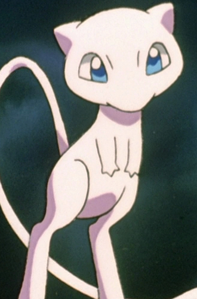

|
Bayleef |
- Pokemon
- Pokemon Chronicles
|
 |
Frosch |
- Fairy Tail
- Fairy Tail (2014)
|
|  |
Mew |
- Pokemon Movie 8: Lucario and The Mystery of Mew
- Pokemon: Mewtwo Returns
|
 |
Nina Tucker |
|
 |
Pikachu |
- Pokemon
- Pokemon Chronicles
|
Pikachu is the main Pokemon in all of Pokemon. Pikachu is from the Kanto region and the evolved form of Pichu. Pikachu can recharge each other with their build up energy. Satomi Koorogi voiced Ritchie's Pikachu. |
 |
Piplup |
- Pokemon Diamond and Pearl
|
Piplup is one of the starters of the Sinnoh region. Piplup has a strong sense of self-pride. Piplup has weak walking ability. Satomi Koorogi voiced Tyler's Piplup. |
 |
Togepi |
- Pokemon
- Pokemon Movie 1: The First Movie
- Pokemon: Pikachu's Rescue Adventure
- Pokemon Movie 2: The Power of One
- Pokemon: Pikachu's Winter Vacation
- Pokemom Movie 3: Spell of the Unknown
- Pokemon: Pikachu's Winter Vacation
- Pokemon: Pikachu and Pichu
- Pokemon Movie 4: Pokemon 4Ever
- Pokemon: Pikachu's Winter Vacation 2000
- Pokemon: Pikachu's Pikaboo
- Pokemon: Pikachu's Winter Vacation 2001
- Pokemon Movie 5: Heroes - Latias and Latios
- Pokemon Advanced Generations
|
 |
Umbreon |
- Pokemon
- Pokemon Chronicles
- Pokemon Diamond and Pearl
|
Umbreon is a Pokemon from the Johto region. Umbreon is an evolved form of Eevee. When it gets agitated, it can release a poisonous sweat. Satomi Koorogi voiced Gray's and Tamao's Umbreon.
|